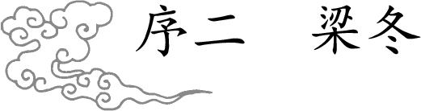
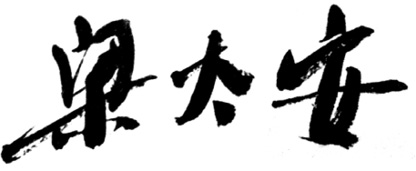

我很小的时候就发现一个事，同样的温度下，比如说15℃，在春天的时候，秋裤你就穿不住了，而在秋天的时候呢，这个秋裤你穿着正合适。那时候，我只觉得这个现象很有趣，也不深想。随着慢慢长大才发现，哦，原来这个现象背后真的有很大的学问。
什么学问呢？原来，人的气是有内外出入的。春天，我们身上的阳气由内向外散发，所以就会觉得穿秋裤会勒得人难受，而到了秋天，阳气是由体外向体内收敛的，所以你就觉得秋裤虽薄，却能挡风祛寒。
我又再问了自己一个问题，为什么长大之后，这个变化我就不那么敏感了，小时候怎么就能很快感觉到。后来，和徐文兵徐爷聊到《黄帝内经·素问》中的“四气调神大论”，以及其他诸篇的时候，他反复讲到的一个话题，才又重新唤起了我对这件小事的思考。
原来，我们正在慢慢地变成一个无觉的人。对自然的变化没感觉，是我们文化传承下的最大的毛病，小的时候，我们是如此敏感，我们可以迅速地知道一个人是好人还是坏蛋，这个人对我们会不会有帮助；我们会第一时间知道天气是冷还是热，这个食物是不是自己喜欢吃的。
比如，在我走进幼儿园的第一天，我就能飞快地察觉到哪一个小朋友喜欢我，我也喜欢或不喜欢哪一个小朋友。但这些从生理到心理，从物质到情感的诸多自然感受，随着我们的成长变得越来越麻木了。我们变成了一个时时充满了“应该”而没有“活该”的人。
什么叫“应该”？应该就是你有道理，有知识，有经验，所以你按照诸多老师教的或者自己后来慢慢学的，自己总结的道理、知识、经验，去形成一套生命中惯性的逻辑，然后就按照这个惯性去活。
很多时候，我们结交一个人，首先觉得应该跟他成为好朋友，因为他有钱、有权，或者因为他可能对我的事业有帮助。而孩子不这样，孩子是“活该”的思维，我活着我就该跟他成为好朋友，或者我就不该带他玩，这叫“活该”。
我发现,人生许许多多的痛苦，或者许许多多让我们觉得不舒服的人，其实都是满嘴说应该的人，许许多多让我们觉得纠结的处境，皆是因为一种“我觉得应该怎么样”的心态造成的。
现在，许多人在应该的方面上走得很错，比如说他觉得互联网时代来了，我应该投身互联网行业，全然不管自己是不是适合在这一类行业里面去做。也许他一辈子做一个手工匠人是最舒服的状态，但是他觉得应该，于是他就去做了。
许多人在高考填报志愿的时候，说我应该考一个好的学校，哪怕专业不对口，结果上学后纠结、痛苦。
如果你觉得你应该去做某一种工作，而你又不喜欢的时候，你会觉得自己在被工作强奸。这就是我们成长的代价。
什么叫天真？天真就是回到“活该”的状态，承认一切就是这个样子，然后用自己的身体，用自己的情绪，认真地、诚实地、敏感地去理解那种“活该”的状态，然后全然接受它，并按这种方式去做。慢慢慢慢地，我们就发现：原来那个“应该”就是道家所讲到的“识神”，那个“活该”就是道家所讲到的“元神”。
我和徐文兵老师共同的老师张至顺道长告诉我们说，人这一辈子就是前半段识神压住元神，如果你有修行，你想很好地成长的话，你要学会把你的识神拿走，重新让你的元神抬头，重新在你的身体里面充满，如此，你就会变成一个快乐的人。
许多人在这一辈子得了很多严重的疾病，其实主要的原因就是他们的识神压住了元神，他用“应该状态”取代了他身体天生的“活该状态”。
在同样温度的春秋两季里，为什么孩子能够迅速地感受到穿秋裤舒服还是不舒服呢？因为孩子还没有一个关于温度的标准刻度，没有看见别人判断的一个结果。
一个孩子摔倒在地上，很少骨折，因为他就像动物一样，轻轻地就滚过去了。为什么一个成年人摔倒就很容易骨折呢？除了骨骼本身的原因之外，我相信是因为成年人身上那种像动物一样的敏感性没有了。我很感谢在过去的一段时间里，有机会和徐老师聊天对话，向他请教上古时期人们真正的生活智慧——《黄帝内经》到底说了些什么？《黄帝内经》说的就是一个中国人，你起码应该保持一个人的活法，起码要保持一种动物的活法，你连动物都没活成，你活什么人？你连人都活不好，你活什么中国人？这是有次第的。
有读者问我：你觉得你和徐老师两个人讲的这个《黄帝内经》对话版跟《黄帝内经》别的版本区别在哪里？
我说：为什么《黄帝内经》本身要有黄帝和岐伯对话？因为两个人在对话的时候，他们所产生出来的思想不是某一个人的，它是和合而成的，这就是“做爱”和“打飞机”的区别。
当两个人互动的时候，会产生一种相互的刺激和激发，最后徐老师讲的话，他自己回头听，也觉得这是我说的吗？太精彩了吧，为什么？有经验的人都知道，一个人对着空气说话，和你对着一个有反应的人说话，是完全不一样的。这里面有无穷的韵味和正能量。
我有一个朋友说，好女人和好车是一样的标准，就是你按它它会响。如果按这个女人她不响，那他就不会产生感觉，没感觉就不会有激情，他就不会形成回路，于是他就不会有神来之笔。所以，《黄帝内经》这个对话版也是如此。
另外，我发现对话所产生出来的叫什么呢？叫“中”的力量。孔子说，“中”是什么？中就是两个人拿着一个杵去舂那个面的过程，两个人拿着杵一起舂，这个时候就形成了两个人共有的节奏，它超越了个人。
美国《连线》杂志的创始主编凯文·凯利写了一本书叫《失控》（Out of Control），成了像Facebook创始人、马化腾这样人的心头最爱，书里讲，所有的人，不管是无意识或有意识互动，会产生一种超越个体的共有之力，这种共有之力称为“神”。
所以，我认为这套《黄帝内经》对话版是一套有“神”的书，它超越了个人的判断，成为两个人的共有之神的内容。当然在这个过程当中，是以徐老师为主，我只不过提供了一个肯定而善良的眼神。
还有读者追问：这套对话版《黄帝内经》跟以往所出的各种解读《黄帝内经》的版本最大的区别是什么呢？很多人把《黄帝内经》讲成一本，你们为什么要选这五本来讲？
我回答：最大的区别就在，这是一套有欢乐能量，并且真正向上古智慧致敬的书。同时，我们希望让大家知道什么叫“经”，“经”是每一个字都值得推敲的书。所以我们认为一篇文章至少要拿一本书的容量来讲。至今，我们都认为这套书还不够精细。
以前陈寅恪先生在讲课的时候，一首二十个字的五言诗，他能讲一个学期。什么是微言大义，一就是一切，每一个笔画，每一个字里面，都蕴含了上古真理。我们只不过是通过不同字的解读，不同句子的解读，一遍又一遍的，恢复到统一的系统里去。
本来，我们在最小的地方就可以获得最大的快乐。极大和极小是统一的。但我们往往忽略了极小处的快乐，而去追求自以为更宏伟的快乐。其实大的没得到，小的也随风而逝。
我们活着，真的应该以小见大，这样才为之“中”。
春天来了，我想到有一次读到海子的《面朝大海，春暖花开》诗的时候，几乎热泪盈眶，因为那一霎那间，同样一句诗句就涌上了我的心头：春姑娘你就轻手轻脚地来吧，我闭着眼睛都知道该什么时候脱掉秋裤。
